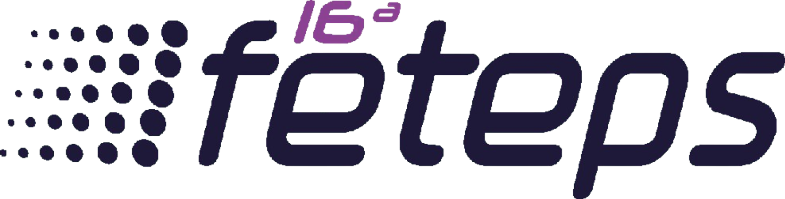
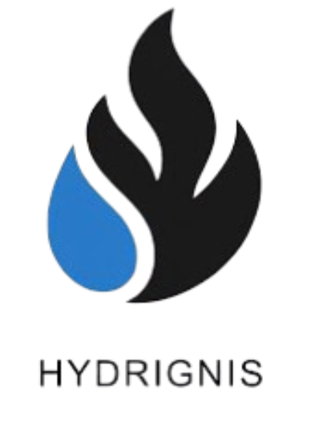
Home Aplicativo Eventos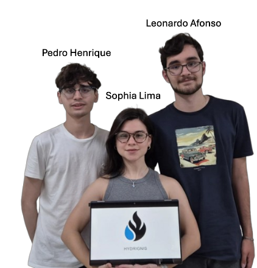
A Hydrignis é uma solução integrada que combina tecnologia IoT, inovação e sustentabilidade para enfrentar dois desafios globais: a escassez de água potável e a ineficiência no combate a incêndios. O projeto une dispositivos autônomos, energia limpa e um aplicativo mobile de controle e monitoramento em tempo real.
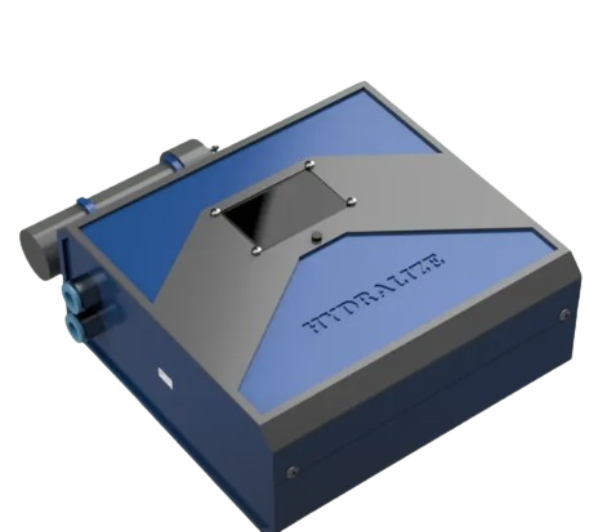
filtro portátil movido a energia solar, com vazão de 1 L/min, projetado para ampliar o acesso à água potável em cenários críticos.
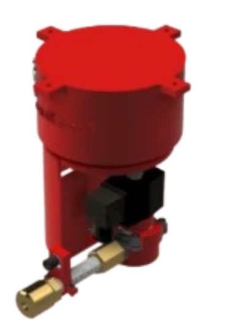
sistema de supressão inteligente de incêndios, com sensores e resposta em menos de 15 segundos, reduzindo em até 70% o uso de água em emergências.
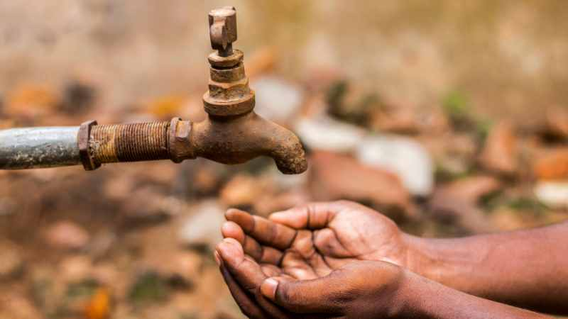
Cerca de 25% da população mundial enfrenta estresse hídrico extremo, agravado por mudanças climáticas, crescimento populacional, má gestão e infraestrutura insuficiente. Esse cenário exige soluções tecnológicas urgentes e sustentáveis para garantir acesso à água potável.
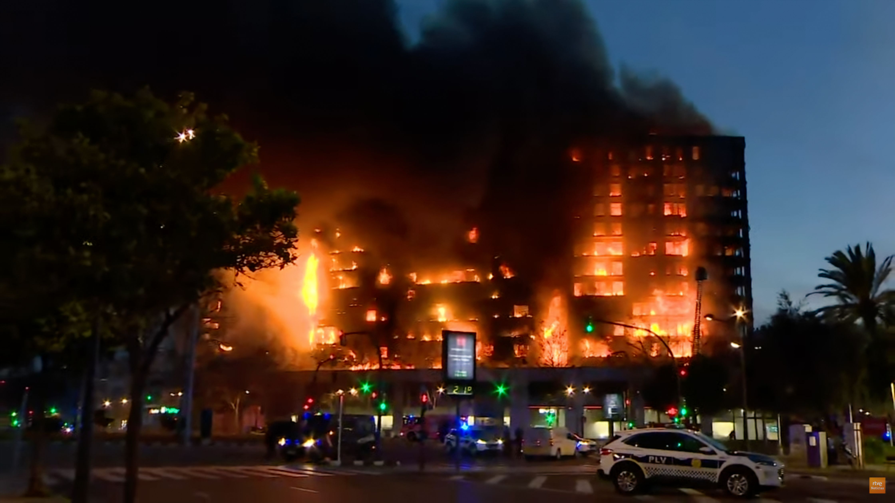
Métodos tradicionais, como sprinklers e brigadas, são lentos e imprecisos, comprometendo a resposta em ambientes de risco. Em contrapartida, sistemas autônomos com IoT podem atuar em até 15 segundos, reduzindo danos, preservando patrimônios e salvando vidas.
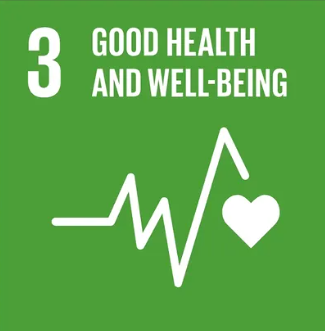
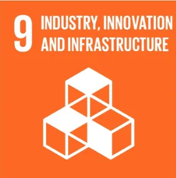
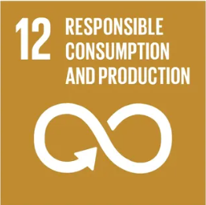
A Hydrignis surge da necessidade de minimizar danos ambientais e sociais, oferecendo tecnologias que unem eficiência, economia de recursos e acessibilidade. O projeto busca gerar impacto positivo tanto em comunidades vulneráveis quanto em setores produtivos.
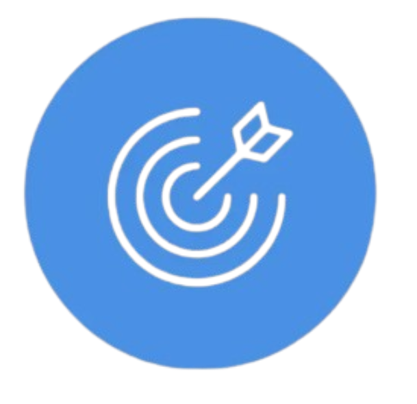
Desenvolver soluções inteligentes que protejam vidas, patrimônios e recursos naturais.
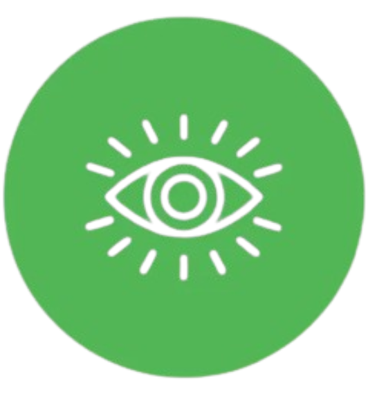
Ser referência em inovação tecnológica para promover segurança, sustentabilidade e inclusão digital.
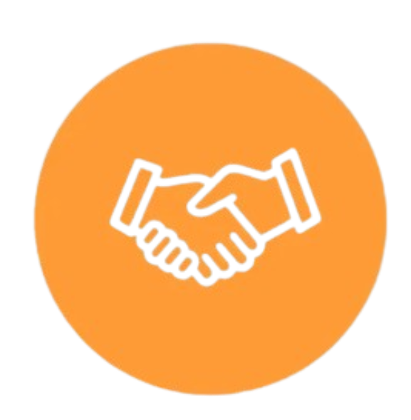
Inovação, sustentabilidade, responsabilidade social, acessibilidade e compromisso com o impacto positivo.